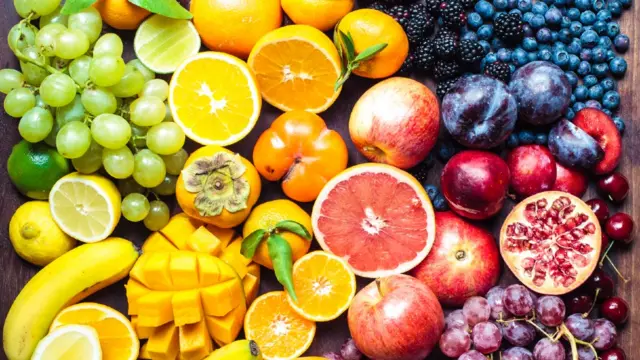
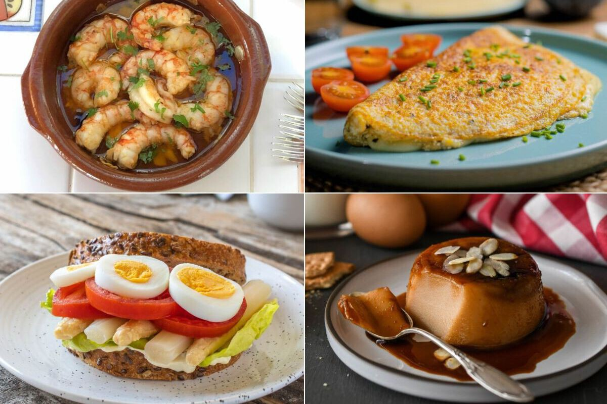

Frutas
Una alternativa práctica que puede formar parte de una alimentación variada.
DURANTE EL RECREO
Descubre algunas opciones que podemos considerar durante el recreo y aprende a tomar decisiones más informadas.
VER OPCIONES ↓MIRA Y REFLEXIONA
Observa el video y reflexiona sobre las decisiones que tomamos cuando elegimos qué consumir.
ALGUNAS ALTERNATIVAS
Selecciona una categoría para comparar dos opciones y reflexionar antes de elegir.

Una alternativa práctica que puede formar parte de una alimentación variada.

Una opción sencilla para acompañar nuestra jornada escolar.
Podemos comparar diferentes tipos de helados antes de elegir.

Analicemos diferentes opciones de comida para nuestro recreo.
COMPARA Y ELIGE
Presiona “VER MÁS” en una categoría para comenzar.
"Una alimentación saludable comienza con una buena elección"